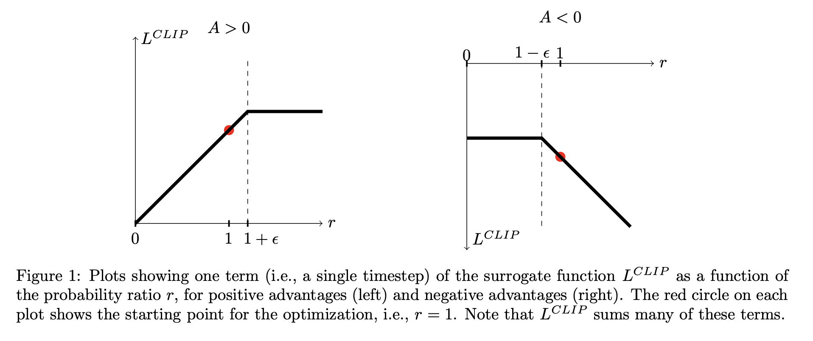

Reinforcement Learning
Introduction
This page contains the notes I've taken while learning about Reinforcement Learning (RL). It was written primarily to help me keep track of and make sense of what I was learning. When learning a new area of any scientific discipline, I don't try to understand any given paper in isolation. Most papers are 80% existing work and 20% of a new idea. Instead, I focus on figuring out exactly what the key new insight was (the 20%), and figure out where they pulled the 80% from. Then I go read those papers, and follow the same policy recursively.
So, my paper notes are aimed mostly at figuring out exactly what the key insight of a given paper is, and what previous papers it built on. For RL, there are two main lines of research - action-value methods (eg Q learning) and policy gradient methods (eg REINFORCE, PPO). For each of these lines, I've started from the basics - in action-value methods, it's a classical understanding of the method in a tabular case, and in policy-gradient methods it's the policy gradient theorem. From there I try to understand the sequence of key ideas building on each other which eventually results in a good, well-grounded understanding of any given method of interest.
There's a lot of seemingly really important papers that I haven't yet had time to study - especially papers unifying action-value methods with policy-gradient methods, like soft actor-critic. I hope to add those here at some point.
This definitely isn't meant to be an "introduction to reinforcement learning" resource. For that I'd suggest Reinforcement Learning: An Introduction by Sutton and Barto, which I will cite regularly.
OpenAI's Spinning Up is also an excellent resource for learning about all of this, especially the modern methods not covered in Sutton and Barto. I found the section on "key papers" to be most useful, and the majority of the papers here are from that list. However, it didn't include notes or even comments on most of the papers, so I think this page will be useful to someone looking to gain a better overview of current research without having to read each paper in detail.
Comparison of approaches
There's a couple of different ways we can organize methods in RL.
- We can compare on-policy methods and off-policy methods. This refers to whether training happens on samples collected while running the same policy that you're training (on-policy), or if samples come from some other policy (an older version of the trained policy, or random gameplay, or a human demonstrator, etc)(off-policy). In general, any off-policy algorithm can handle on-policy data, but an on-policy algorithm can't handle off-policy data.
- We can compare policy gradient and action-value methods. This refers to the way the algorithm works. Action-value methods are based around estimating the value (expected return) of a state, or a state-action pair. A policy is then derived from this value function. Policy gradient methods focus on learning the policy directly.
Although there are exceptions to every rule, we can try to draw some general comparisons between the different approaches:
Off-policy vs on-policy
- off-policy:
- Has an advantage in sample complexity, because they can re-visit past experience in training.
- Has worse theoretical convergence guarantees, especially when combined with function approximation. This is referred to as the "deadly triad" and explained in detail in Sutton and Barto (11.3).
- The primary approach, Q-learning, only works in small, discrete action spaces - but it these environments, it works really well.
- In general, off-policy methods work increasingly poorly as the behavior policy and the training policy are increasingly different.
- on-policy:
- Has a disadvantage in sample complexity, because they must collect new samples for every gradient step.
- Has better theoretical convergence guarantees, and works more stably in practice.
Action-value vs policy gradient methods
- value function methods
- Can be on (eg TD) or off-policy (eg q-learning)
- Significantly well-studied and well-developed in the tabular case (most of Sutton and Barto focuses on this)
- Works best in smaller, discrete action spaces.
- Attempting to discretize a continuous actions spaces meets the curse of dimensionality - if we have k divisions per dimension and n dimensions, we have n^k actions.
- Naturally learns deterministic policies, which are exploitable by an adversary.
- policy gradient methods
- Traditionally on-policy, although there are off-policy extensions, eg DPG.
- Has stronger convergence guarantees in the on-policy setting.
- Handles large and/or continuous action spaces easily.
- Naturally learns stochastic policies, which are robust to adversial settings
Notation
I'll try to use somewhat consistent notation throughout:
- We are dealing with a Markov decision process, where an interaction with the environment at time $t$ yields:
- $S_t$, the state of the environment at time t. May be partially observed.
- $A_t$, the action taken after observing $S_t$
- $R_t$, the rewards received after taking $A_t$
- $S_{t+1}$, the next state of the environment.
- We have a (learned) policy $\pi(a|S_t)$ which represents the probability distribution over actions selected by the policy.
- The expected discounted reward $\eta(\pi)$ is the expected reward of an episode (with given distribution over start states) under the policy $\pi$
- $V_\pi(s)$ is the value function, the expected reward under policy $\pi$ from a given state
- $Q_\pi(s, a)$ is the state-action value function, the expected reward under policy $\pi$ from a given state and action
- $A_\pi(s, a) = Q_\pi(s, a) - V_\pi(s)$ is the advantage function
Action-value methods
Overview
Action value methods are based around a function that assigns a value to each state, or each state-action pair (both are roughly equivalent). Half of the problem (the prediction problem) is approximating this value function. The other half (the control problem) is using this value function to navigate the exploration/exploitation tradeoff and interact with the environment.
Then there's the question of on-policy vs off-policy algorithms. On-policy algorithms learn the value function while interacting with the environment under the same policy being trained (eg epsilon-greedy using the same value function). Off-policy algorithms are able to learn from any interaction with the environment, even if it's not generated by the policy being trained (eg a human demonstration, or completely random play, etc). The interaction policy must satisfy some basic assumptions of course, eg that it eventually will visit all states.
TD(0) is the simplest on-policy method. Q learning is the simplest off-policy method.
Even before getting into TD methods, an even simpler approach is Monte Carlo (MC) methods. Eg
$$V(S_t) \leftarrow V(S_t) + \alpha \big[ G_t - V(S_t) \big]$$
where $G_t$ is the actual return of an episode following time $t$.
The core idea of TD methods is to have an online algorithm - one that can be updated at each timestep, without waiting for the episode to end. TD(0) is the following:
$$V(S_t) \leftarrow V(S_t) + \alpha \big[ R_{t} + \gamma V(S_{t+1}) - V(S_t) \big]$$
where $R_t$ is the reward after taking an action at time $t$ and $\gamma$ is a discount factor.
We can also write it in terms of state-action values instead:
$$Q(S_t, A_t) \leftarrow Q(S_t, A_t) + \alpha \big[ R_{t} + \gamma Q(S_{t+1}, A_{t+1}) - Q(S_t, A_t) \big]$$
Q learning is the off-policy version of TD(0):
$$Q(S_t, A_t) \leftarrow Q(S_t, A_t) + \alpha \big[ R_{t} + \gamma \max_a Q(S_{t+1}, a) - Q(S_t, A_t) \big]$$
The expression $\max_a Q(S, a)$, however, is equal to $V(S)$ under the greedy policy. Since the only information used from the rollout is a (state, action) pair and the resulting reward and next state (both of which are independent of the exploration policy), it doesn't matter what exploration policy was used to sample the rollouts - thus why this works in the off-policy setting.
Another way of looking at this is that instead of using the selected action $A_{t+1}$ from the rollout as done in TD(0), we re-select the best action $\max_a Q(S, a)$ under the current policy at training time.
Significantly, though, evaluating $\max_a Q(S, a)$ in a continuous action space is not trivial, since the action space is infinite. Using something like gradient descent in an inner loop of an algorithm would be far too slow. This is a problem that we will see addressed in some of the later policy gradient methods.
Epsilon Greedy
An accessory method, for choosing actions when you have a Q function. Basically you evaluate the Q function $Q(s, a)$ for each action at a given state. Given some $\epsilon$ in $(0, 1)$, choose the highest-value action with probability $1-\epsilon$. Otherwise, choose one of the other actions randomly. The idea is that (with small $\epsilon$) this mostly chooses the greedy action, but once in a while chooses a random other action. It is the simplest method of navigating the exploration/exploitation tradeoff, as you exploit with probability $1-\epsilon$ and explore with probability $\epsilon$.
DQN
Playing Atari with Deep Reinforcement Learning
Three major objections are raised with on-policy algorithms:
- Each sample can only be seen once in training (when it was gathered), since the policy will change after a parameter update and the sample would no longer be on-policy.
- There is significant correlation between samples that are sampled sequentially in time. This makes training unstable (see notes on A3C for more on this).
- There is significant correlation between the current policy and the distribution of samples seen. As the policy changes, the data distribution changes also. This can cause training issues.
The goal of DQN was to extend RL methods to large state spaces like image inputs - previously, methods had only really been effective on problems with small state spaces. The testbed problem used in DQN was playing Atari from raw video frames. To effectively generalize over large state spaces like images, powerful machine learning methods like deep neural networks are needed. The problem is that incorporating complex nonlinear functions into the RL problem adds a great deal of instability, since a modification of any given parameter will have effects over the entire state space.
So, there was a need for methods to stabilize RL methods. The key idea introduced was "experience replay", where all the interaction tuples (s, a, r, s') are stored in a "replay buffer" while interacting with the environment, and a random sample of them are selected for training the network at each batch using off-policy Q-learning. This addresses all of the key problems raised above:
- it allows samples to be seen more than once, thus improving data efficiency
- it breaks temporal correlation between samples, reducing variance of network updates.
- the current policy has little impact on the data distribution
In practice only a fixed (but large) number of samples are stored, and in the paper each sample was used in training ~8 times
From the experimental results, this method was quite effective in the Atari domain (which has a discrete action space) compared to previous work, even surpassing human experts on some games.
Dueling DQN
Dueling Network Architectures for Deep Reinforcement Learning
Proposes a small tweak to DQN: Instead of directly predicting $Q(s, a)$, the network has two heads, one which predicts $V(s)$ and the other predicts the advantage function $A(s, a)$. Then they are combined to get $Q$ following the equation $Q(s, a) = V(s) + A(s, a)$. Therefore, $V$ and $A$ are implicitly learned by training to predict $Q$.
The idea is that learning $V$ and $A$ separately is easier than learning them combined - more factored representations are usually good in machine learning. Basically you're asserting a prior over the form of the function, which constrains the solution space, allowing your optimization power to focus more on valid solutions.
IMO, "dueling" seems like a bad name, it's not adversial in any way.
Double Q learning
Deep Reinforcement Learning with Double Q-learning
There is a known bias in the Q-learning algorithm, and a variant called double Q learning that addresses it (Sutton and Barto 6.7). This paper applies double Q learning to DQN.
Prioritized Experience Replay
In the experience replay method introduced with DQN, a large sliding window of experience is maintained and sampled from at random for training. This isn't ideal because some samples might be less interesting or useful than others, and we'd like to sample more useful samples more often to accelerate learning.
The key idea is to sample more frequently samples that have high TD error, which is a measure of how bad our prediction was for a given transition. This seems like a pretty obviously good idea, but there are some technical details that need taken care of that most of the paper focuses on.
Rainbow DQN
Rainbow: Combining Improvements in Deep Reinforcement Learning
Doesn't introduce any new methods, but instead notes that there are a number of paper that suggested various (and mostly orthogonal) improvements to the core DQN approach. The ones considered in this paper are:
- double DQN
- prioritized experience replay
- dueling DQN
- multi-step methods (eg TD(n) instead of TD(0))
- distributional methods (I haven't learned about this yet)
- noisy DQN (I haven't learned about this yet either)
The goal was to identify which of these methods are really useful, or if some of them more or less do the same thing. To figure this out, they first made a "rainbow" model including all of the methods. This model performed significantly better than DQN or any of the individual methods. Then, they performed an ablation study on this model, by testing the effects of removing each method individually from the rainbow model. If the ablated model for a given method performs significantly worse than the rainbow model, that indicates that the method is key to the good performance of the rainbow model.
Very roughly, the results of the ablation study were:
- dueling and double DQN don't have a huge effect
- next in order from least important to most:
- noisy DQN
- distributional methods
- prioritized experience replay
- multi-step methods
The complete rainbow model is now a common benchmark for deep Q-learning methods, especially on Atari.
Policy Gradient algorithms
REINFORCE
The policy gradient theorem (Sutton and Barto 13.2) states
$$\nabla{J}(\theta) \propto \sum_s \mu(s) \sum_a q_{\pi}(s, a)\nabla_{\theta} \pi(a|s, \theta)$$
where $J$ is the performance of the policy (in other words, the expected return of the policy when started on a fixed start state with the given parameter value $theta$), $\mu$ is the on-policy distribution of states, $q$ is the state-action value function, and $\pi$ is the policy.
This can be re-written as
$$\nabla{J}(\theta) \propto \mathbf{E}_\pi \bigg[ G_t \frac{\nabla \pi(A_t|S_t, \theta)}{\pi(A_t|S_t, \theta)} \bigg]$$
where $G_t$ is the future discounted return from step $t$, and $A_t$ and $S_t$ are actions and states sampled under policy $\pi$.
Given that we now have an expression proportional to $\nabla{J}$ which we can compute given an on-policy episode, the policy weights can be updated simply by
$$\theta_{t+1} = \theta_t + \alpha \nabla{J}$$
where $\alpha$ is a step size constant.
Since we need to have access to the future reward $G_t$ before computing an update, the full algorithm runs an entire on-policy episode, and then computes this update for each time-step with the final $G_t$s. As a result, this algorithm doesn't directly work in online or non-episodic situations.
Also, compared to bootstrapping methods, REINFORCE (a Monte Carlo method) has high variance. The variance of a Monte Carlo method is commonly $\sigma^2 / n$, where in this case $\sigma$ is the variance of a gradient update based on a single step of the rollout (ignoring correlations between steps), and $n$ could be the number of steps combined into a single gradient update. Since $\sigma$ is large (the action selected at time $t$ has only a small influence over the total future cumulative rewards), it takes a large amount of samples per batch to have a consistently good gradient step, or a large amount of batches to average out low-signal gradient steps.
REINFORCE with baseline
One way to reduce variance in REINFORCE is to add a state-dependent baseline. If we can obtain an accurate estimate of the value of a given state, $V(S_t)$, this estimate will explain most of the variance of the future rewards. So instead of using $G_t$ directly in the REINFORCE update, we can use $G_t - V(S_t)$, which will have lower variance than $G_t$ alone. Intuitively, if we have an accurate understanding of the average future rewards of a given state, and we take an action and receive a different reward, we can expect more of this difference to be attributed to the specific action chosen than before.
Actor-critic methods
Although adding a baseline helped to reduce variance, it didn't address the problem that REINFORCE doesn't work for online or continuous problems - it requires all future rewards to be known before performing a gradient update. Actor critic methods are a way to introduce bootstrapping into policy gradient methods, thus removing this requirement.
Essentially we replace the episode reward $G_t$ (which we had to wait until the end of the episode to access previously) with an estimate $R_{t} + \gamma V(S_{t+1})$ where $R_t$ is the reward received after taking an action in timestep $t$, $V(s)$ is a learned state value function, and $\gamma$ is a discount factor.
This is the equivalent of 1-step TD methods in action-value methods like TD(0) and Q-learning. Thus, semi-gradient TD(0) is one method for learning the value function (Sutton and Barto 9.3). Here, we update the value function using a simlar 1-step bootstrapping method, where we take gradient steps on the loss function:
$$L = \bigg[ V(S_t) - \big[ R_t + \gamma V(S_{t+1}) \big] \bigg] ^2$$
Extensions:
- The concept can be extended beyond 1-step methods to the full suite of multi-step methods introduced for action-value problems, including eligibility traces.
- The idea of using a state-dependent baseline is still useful for variance reduction in the bootstrapped case. In that case, the estimator of $G_t$ is
$$R_t + \gamma V(S_{t+1}) - V(S_t)$$
- This is actually an estimator of the "advantage function", the function $A_\pi(s, a) = Q_\pi(s, a) - V_\pi(s)$. In the section on Generalized Advantage Estimation, we will review other estimators of the advantage function, which can be used in place of this estimator in actor-critic methods.
Trust Region Policy Optimization (TRPO)
Trust Region Policy Optimization
Let $\eta(\tilde\pi)$ be the cumulative advantage of $\tilde\pi$ over $\pi$, ie the difference in expected rewards of $\tilde\pi$ over $\pi$.
The problem addressed here is how to guarantee that at each step of a policy gradient algorithm, the expected reward under the policy is monotonically increasing. Formally, how do we ensure that $\eta(\tilde\pi) > 0$ for every step, if $\tilde\pi$ is the new policy after the step?
It is pretty obvious that if we can guarantee that a policy update has non-negative advantage over the previous policy for every state, then the overall expected reward will be higher under the new policy.
Of course, it's pretty much impossible to guarantee that the advantage will not decrease for every state, if we're dealing with DNNs and large state spaces. So instead we create a first order approximation of $\eta(\tilde\pi)$, $L_\pi(\tilde\pi)$. The approximation only works in a small region around the old policy $\pi$. However, the gradient of $\eta(\tilde\pi)$ and $L_\pi(\tilde\pi)$ are the same at the current value of the parameter $\theta$, so an infinitely small step in the direction of positive gradient on $L_\pi(\tilde\pi)$ will improve $\eta(\tilde\pi)$ also.
The problem is that infinitely small steps aren't useful - we need to take finite sized steps to make progress. So instead we have to prove that there is a value $\epsilon$ such that $\eta(\tilde\pi) \geq L_{\pi}(\tilde\pi) - \epsilon$. Then, we can take a step causing change in L smaller than $\epsilon$ and still be guaranteed improvement.
Basically the rest of the paper derives such a bound and shows how to practically approximate it and build an approximation algorithm around it. However, TRPO has essentially been replaced by PPO, so I won't focus on the math of TRPO here.
Proximal Policy Optimization (PPO)
Proximal Policy Optimization Algorithms
Basically the conclusion of the TRPO paper is that we should be optimizing
$$\max_{\theta} \mathbf{E_t} \bigg[\frac{\pi_\theta(A_t|S_t)}{\pi_{\theta_{old}}(A_t|S_t)} \mathbf{A_t}\bigg]$$
subject to
$$\mathbf{E_t}[KL[\pi_{\theta_{old}}(\cdot|s_t), \pi_{\theta}(\cdot|s_t)]] \leq \delta$$
where the expectation is over the on-policy trajectory, $\mathbf{A_t}$ is the advantage function, and $\delta$ is some constant.
If we let $r_t(\theta) = \frac{\pi_\theta(A_t|S_t)}{\pi_{\theta_{old}}(A_t|S_t)}$, then we can rewrite the TRPO objective as
$$L(\theta) = E_t[r_t(\theta)\mathbf{A_t}]$$
This equation intuitively makes sense. $r_t(\theta)$ is the ratio of the probabilities of choosing the given action under the old and new policy, and if the result was better than expected (positive $A_t$), then we obviously want to increase the chance that we again select that good action.
The constraint in TRPO in essense aims to keep the old policy similar to the new policy, with the intuition that if the policies stay close then a linear approximation to the performance function (the gradient) will hold. However, optimizing the TRPO objective under this constraint is difficult.
The key idea of PPO is to re-phrase the constrained optimization problem from TRPO as a loss function which we can maximize:
$$L(\theta) = E_t[\min(r_t(\theta)\mathbf{A_t}, \text{clip}(r_t(\theta), 1 - \epsilon, 1+\epsilon)\mathbf{A_t})]$$
Basically this is a piecewise linear function, that is linear in an $\epsilon$ region around a probability ratio of 1, and then clips the loss once the probability ratio reaches a certain $\epsilon$. So it allows the function to be maximized a certain amount, and then the clipping neutralizes the ability to optimize this function further. Figure 1 in the paper really makes this clear:

The whole point of this is to be able to perform multiple epochs of SGD on a batch of samples, such that we are able to update the network as much as is (safely) possible. The $\epsilon$ parameter adjusts how large this safe step is.
As alluded to before, the advantage function $A_t$ can be estimated in multiple ways, but using Generalized Advantage Estimation is the most common approach.
In practice, PPO is simpler to implement, runs faster, and potentially even performs better than TRPO. PPO is probably the most common "baseline" policy gradient approach and is known for performing reliably and consistently compared to other methods.
Asynchronous Methods for Deep Reinforcement Learning (A3C)
Asynchronous Methods for Deep Reinforcement Learning
A fundamental problem for deep online RL is that a series of timesteps from the same episode is highly correlated, so training on sequential samples causes instability in the training - each of the correlated updates pushes the network parameters in a similar direction, causing a large change in the policy. Since most of the variance in a given update is noise, the large policy update is mostly in a random, not-useful direction, which disrupts learning.
One solution to this is a replay buffer, like used in DQN, but this requires an off-policy learning algorithm since the samples in the replay buffer are from a different policy (an older policy) than the current policy.
So the core question in this paper is "how can we use on-policy algorithms but stabilize training?" The key insight is that if we run multiple instances of the environment simultaneously, and do asynchronous updates of the model from all of them, this will sufficiently decorrelate the updates and stabilize training.
They test TD(0) (sarsa), 1-step q-learning, n-step q-learning, and advantage actor-critic in this asyncronous context.
There are a couple of implementation details that I noticed for the first time in this paper but are widely used elsewhere (and probably not invented here):
- For the advantage actor-critic implementation, they use the a single neural network with two heads for computing the policy and the value function. This allows the bulk of the computation to be shared between the two.
- They use entropy regularization, which is an additional term in the loss function that encourages the entropy of the policy to remain high. This helps the network not converge onto a specific policy too quickly.
In practice, the idea of having many instances of the environment running in parallel is now widely used to stabilize most on-policy policy gradient methods, eg PPO. It seems that there is little difference of applying the updates from each instance asynchronously or combining the samples from each instance into a single batch and applying the update synchronously, so the latter method is used more in practice for its simplicity.
Emergence of Locomotion Behaviours in Rich Environments
Emergence of Locomotion Behaviours in Rich Environments
Not as much a "key algorithm" as the previous papers, but a good paper nonetheless. The key question here is "how do we train complex, emergent behaviors with only simple reward functions in problems where the choice of reward function isn't clear, eg locomotion?"
The key idea is that a diverse and varied range of challenges for the agent to overcome (eg in locomotion, stuff like gaps, things to climb over, things to climb under, etc) naturally encourages robust behaviors even under a simple reward like "distance travelled from the origin".
Curriculum learning (ie raising the difficulty of the environments over time, allowing the agent to master simple environments before moving to complex environments) helps, as expected from experience in other domains.
They use a distributed version of PPO - basically A3C applied to PPO. Here, they found that sychronously applying updates from multiple workers is better than async.
Observation features included: - joint positions, velocities, torques - body core position, orientation, velocity, etc - an array of heights of terrain in front of the agent
Misc
Representing action spaces
Discrete
Discrete is pretty simple - the model just outputs a logit for each class, which you compute a softmax over to generate a probability for selecting each action.
Continuous
The following technique was introduced in the TRPO paper and used in the PPO paper (and others). I haven't yet found an alternate approach for a Gaussian parameterization, although there are papers that try to do away with the Gaussian approach entirely.
Basically we model the policy as a multivariate gaussian over action space with diagonal covariance (there's no correlation between different dimensions, ie it's a circular and not oval gaussian).
Using neural nets, the main part of the network predicts the means of each dimension of the gaussian, and then there's a separate parameter that learns the log-std for each dimension (the same for all states, so it's independent of input). I'm not sure the advantage of log-std vs just regular, although certainly it would have some effect on the learning dynamics. One source mentioned that it's just because then we don't have to constrain the network to produce a positive value.
Generalized Advantage Estimation
High-Dimensional Continuous Control Using Generalized Advantage Estimation
In REINFORCE, we use the reward R_t as an estimate of how good an action is. This is naturally high-variance, because the future reward after an action is only very loosely correlated with the selected action (many other action selections also impacted that reward). So we want a lower-variance metric. The advantage function is apparently one of the lowest-variance metrics to use in place of R_t, since it directly evaluates how good an action selection is compared to the default selection.
The problem is that we have to estimate the advantage function. That's what this paper is all about.
The first thing to note is that we can reduce variance by simply discounting future rewards. That makes the rewards soon after the action have more weight, which is naturally sort of a good thing. It introduces bias, though. So the discount rate $\gamma$ is our first parameter that allows us to trade off bias and variance.
So due to the previous insight, we are actually interested in estimating the discounted advantage function, ie the advantage function under discounted rewards.
So the second insight is that there are two especially notable estimators of the discounted advantage function. The first is
$$\hat A_t := \delta_t^V = r_t + \gamma V(s_{t+1}) - V(s_t)$$
where $r_t$ is the reward at timestep $t$. This is the TD residual - the difference between the actual reward and the expected reward under the value function $V$. This is obviously an estimator of the advantage function - if V is accurate, then this is actually an unbiased estimator. But, if V is inaccurate, this estimator will be biased. That said, this is a low-variance estimator - since only the reward from this step is considered, the reward is closely tied to this specific action.
The other notable estimator of the discounted advantage function is
$$\hat A_t := \sum_{l=0}^{\infty} \gamma^l \delta_{t+l} = \big[ \sum_{l=0}^\infty \gamma^l r_{t+l} \big] - V(s_t)$$
This is the discounted sum of actual future rewards minus the value function. It's unbiased (since the value function is only a function of state, it can't bias the action selection), but has high variance because of the summed reward is affected by many action selections, not just the one at this step. (This is pretty much the same as the R_t we discussed at the beginning, with all the same issues).
So the key idea is that if we create a smooth mixture of these two estimators, we can achieve a good tradeoff between bias and variance. It turns out that the formula:
$$\hat A_t := \sum_{l=0}^\infty (\gamma \lambda)^l \delta_{t+l}^V$$
is such a mixture - if $\lambda = 0$, we have the first estimator. If $\lambda = 1$, we have the second estimator. This can be computed given a policy rollout and an estimated value function.
In the PPO paper, they suggest that in practice a truncated version of this works well - eg do a rollout of 100 steps, and then compute GAE using a truncated version of the above.
There's also the interesting formula which we saw in the second estimator above: $$\hat A_t = R_t - V(s_t)$$
where $R_t$ is the discounted sum of future rewards. This doesn't hold in general for GAE (only when $\lambda$ = 1), but provides a clearer way of looking at things (and a way of checking computations). Or, if we consider $R_t$ as an estimator of discounted future returns (instead of the actual returns from this rollout), this equation holds for all $\lambda$. In the case that $\lambda = 0$, the rewards estimator is $r_t + \gamma V(s_{t+1})$.
The question of how to estimate the value function is separate from GAE - although in the paper they suggest a couple options:
- a standard squared error (updated with each new batch of samples). This is simple and effective, but it's unclear how large of a step you should take towards fitting the model on each new batch of data. Too large of a step and you'll overfit the model on each new batch.
- a trust region method - basically minimizing the same squared error, but constraining the optimization to a certain size region around the previous solution. Through this approach, you can heavily optimize this objective to guarantee your steps are not too small, but also be assured that the steps will be no larger than the constraint. This can be effectively approximated with a quadratic approximation to the function optimized with conjugate gradient methods.